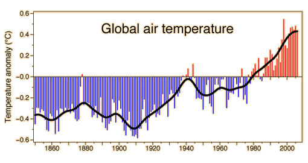

Global Air Temperature

This graphic of the global air temperature was posted by Phil Jones on behalf of the Climatic Research Unit, UK. The key reference used was Brohan, et al.
While the increase in air temperature (global warming) is obvious, the more difficult question is whether or not this increase is primarily driven by human activity in the form of the release of greenhouse gases. The position of the Inter-governmental Panel on Climate Change (IPCC) is that human activity is a major part of the cause, as indicated in the following statements from their 2007 report:
- 'Warming of the climate system is unequivocal, as is now evident from observations of increases in global average air and ocean temperatures, widespread melting of snow and ice, and rising global average sea level.'
'Most of the observed increase in globally averaged temperatures since the mid-20th century is very likely due to the observed increase in anthropogenic greenhouse gas concentrations. This is an advance since the TAR's conclusion that "most of the observed warming over the last 50 years is likely to have been due to the increase in greenhouse gas concentrations". Discernible human influences now extend to other aspects of climate, including ocean warming, continental-average temperatures, temperature extremes and wind patterns'
|
Index
References
Kraushaar & Ristinen
Brohan, et al. |